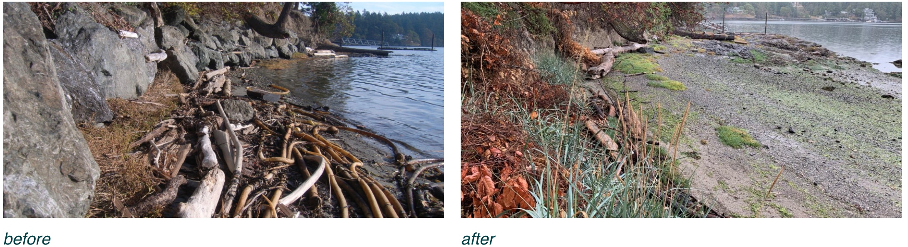
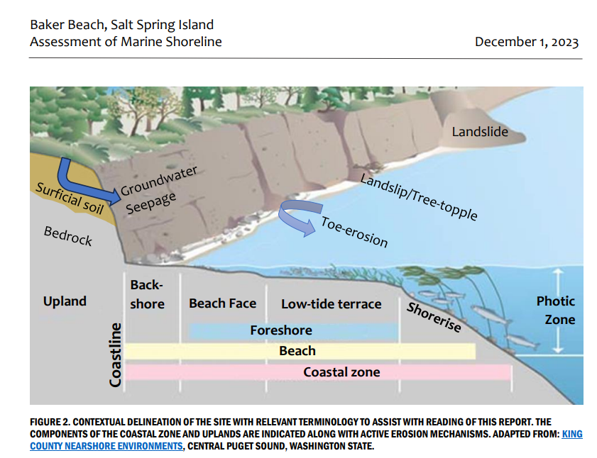

Overview: Baker Beach has seen an alarming increase of erosion due to intensified king tides and winter storms over the past few years. As local residents, we are working to mitigate this environmental damage to safeguard the beach’s slope, shoreline, and surrounding properties. Protecting this area is essential not only for maintaining the landscape but also for preserving critical habitats for wildlife. The trees along the shore, vital to the stability of the slope, are home to eagles and bats whose ecosystems are directly threatened by further erosion. Doing nothing risks losing not only land and vegetation but also these essential habitats—something that anyone who walks the beach can see is worth protecting.
Because we have witnessed an alarming increase of erosion in the last five years we engaged a geologist 2 years ago to better understand the mechanisms involved with the erosion and to see if we should be concerned. The conclusion was that the erosion is due to two main forces are at play: 1) The toe of the slope is being undercut at the base by wave action, which will only get worse with climate change 2) the heavy storms that we are experiencing in winter are over saturating the ground and causing trees to destabilize. And this will only get worse with climate change (see image at end of document.)
Purpose of Project: Stabilize the slope and shoreline along Baker Beach. The stabilization methods are nature-based ("Green Shoring"), including vegetation enhancement and bioengineering, beach nourishment, and wave deflection with non-uniform rock clusters to supplement the natural rock clusters on the beach.
Does this project restrict beach access? Absolutely not. No access will be affected, and the beach will always be accessible.
Why not build a rock-wall to adapt to and prepare for rising sea levels? The province is opposed to rock-walls for aesthetic and environmental reasons. Instead, we are using a government-approved, science-based approach called Green-shoring. This method aims to “preserve or restore physical processes such as the natural actions of water and sediment movement that maintain healthy shorelines. Maintain or enhance habitat function and diversity along the shoreline by making shorelines more secure against erosion and flooding. And prevent or reduce pollutants entering the aquatic environment.” We have worked with professional biologists and geo-tech engineers to develop a green-shoring solution that puts equal focus on mitigating slope erosion from above by rejuvenating it with native plants, and shoreline protection from below with an intermittent nature-based shallow berm that mimics the naturally occurring substrate.
Similar Cases: The Green-shoring has seen remarkable success as a nature-based shoreline solution in the Cowichan Valley, Nanaimo, Qualicum Beach, the San Juan Islands, and more.

How does Green-shoring imitate the natural shoreline? This approach uses several methods to recreate natural processes. Beach nourishment, for example, mimics sediment deposits that typically result from landslides, bringing coarse sediment to the backshore, foreshore, and low-tide areas. By placing sediment in a 'loaf' shape, the initial setup looks like a natural landslip, allowing waves and currents to naturally redistribute materials along the shore.
The design prioritizes using native materials like clean pebbles and coarse sediment that resemble what would naturally appear after a landslide. Non-uniform clusters of rocks are also strategically placed along the foreshore, imitating the natural spread of boulders in coastal landslips. These clusters help absorb wave energy and contribute to shoreline stability.
Will this damage the sensitive Eel Grass areas and The Mideshipmen Spawning Habitat? Our plan protects the eelgrass and the midshipmen spawning habitat. To achieve this, we engaged the expertise of professional biologists to map out their habitat and the times of year they are used for various species life cycles. To avoid any disruption, our project will implement the recommendations and protocols to ensure marine safety:
What about vegetation that may grow along the shore? In the backshore and foreshore areas, we expect to encourage the growth of salt-tolerant plants through bioengineering techniques and careful planting. Over time, salt-tolerant grasses, sedges, and low shrubs may naturally develop on stable sediment deposits, even through stormy weather. Native salt-tolerant species are being considered for planting to help stabilize the sediment and make the shoreline more resilient.
Stakeholder Consultation: We have reached out to 13 Indigenous communities who have hereditary rights in the area for their comments and consideration. We are continuing to follow up with the groups, and in particular the Penelakut who have a foreshore tenure along the shores for claming and oyster farming.
Why Now? Climate change is driving more severe environmental impacts, including erosion along our shorelines. With this project, we aim to protect the slope, shoreline, vegetation, and properties along Baker Beach. Green-shoring offers the most sustainable and eco-friendly approach to address this damage and safeguard our coastline. By taking action now, we can help preserve the natural beauty and stability of the area against climate-driven changes before it's too late.
This project is currently under public comment period.
